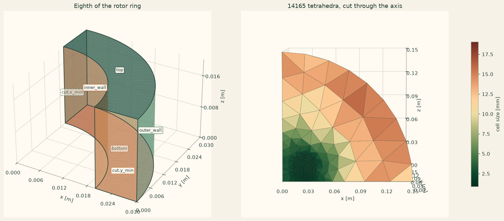

Docs › Examples › Static field of a Halbach rotor
Magnetostatics · 3D
Static field of a Halbach rotor
A finite four-pole Halbach rotor ring whose rotating magnetisation concentrates the field outside the rotor and nearly cancels it in the bore.
Run locally with OneSimulation. The example downloads are free. Running them requires an activated runtime. Runtime Alpha 0.2.1a7 · CPython 3.13 on macOS (Apple Silicon), Ubuntu 22.04 (x86-64), and Windows x64. Installation and activation · View pilot plans. Scope of the reference checks.

What it computes
OneSimulation solves the 3D vector potential of the rigid Halbach magnetisation with second-order Nedelec edge elements on one eighth of the finite rotor read from STEP, the magnetisation entering through its curl, with GMRES and the auxiliary-space preconditioner for edge elements on two meshes refined in the air gap. The mid-plane air-gap field is compared with Halbach's two-dimensional solution for an infinitely long rotor and with the finite ring computed independently by Coulomb integration of its magnetic charges, and a flux balance checks the computation. The script that builds the STEP files comes with the notebook.
What it checks
In the mid-plane the cos(2 phi) amplitude of the radial air-gap field is 0.4927 T against 0.4928 T from the Coulomb integration of the finite ring (-0.03 %; -0.10 % on the coarser mesh) and 0.4639 T for the infinitely long rotor, an end effect of +6.2 %; the field keeps the cos(2 phi) shape within 0.34 %, the net flux through a closing plane vanishes to 1e-15, and the bore field stays at 34 mT against 464 mT outside.
Geometry
The notebook starts at the import of the CAD files halbach_rotor_field.step, halbach_rotor_field_magnet.step: STEP (AP242), readable by any CAD program, with the names of the faces that the boundary conditions use. Put them next to the notebook.

The geometry script
The script halbach_rotor_field_geometry.py builds the geometry with the CAD objects of OneSimulation and writes the files. Change a dimension there, run it, and run the notebook again.
"""Geometry of the OneSimulation example "Static field of a Halbach rotor".
Builds one eighth of the air around a finite four-pole Halbach rotor with the CAD objects of
OneSimulation: the part x > 0, y > 0, z > 0 of a ball of 150 mm radius, whose faces form the groups
planes (x = 0 and y = 0), midplane (z = 0, the mid-plane of the rotor) and outer, written to
halbach_rotor_field.step. The eighth of the magnet ring (inner radius 20 mm, outer radius 30 mm,
40 mm long, so 20 mm above the mid-plane) is written to halbach_rotor_field_magnet.step.
"""
from onesim.cad.d3 import AnnularCylinder, Box, Sphere
mm = 1e-3
air, inner, outer, half = 150 * mm, 20 * mm, 30 * mm, 20 * mm
eighth = Box(length=air, width=air, height=air).named("cut")
space = Sphere(radius=air).named("ball") & eighth
faces = space.boundaries
space.grouped(
planes=faces["cut.x_min"] | faces["cut.y_min"],
midplane=faces["cut.z_min"],
outer=space.select(faces=lambda face: face.id.startswith("ball")),
).save("halbach_rotor_field.step")
(AnnularCylinder(inner_radius=inner, outer_radius=outer, length=half) & eighth).save(
"halbach_rotor_field_magnet.step"
)The notebook
The complete notebook, cell by cell. Run it to produce the figures and the comparison printout.
A four-pole rotor (\(p=2\) pole pairs) is a ring of permanent magnet (inner radius \(r_i=20\) mm, outer radius \(r_o=30\) mm, length \(L=40\) mm, remanence \(B_r=1.2\) T) magnetised in the Halbach pattern
so the direction of magnetisation turns by \((p+1)\cdot360°\) around the ring. The field of the rigid magnet, \(\mathbf B=\mu_0(\mathbf H+\mathbf M)\), solves \(\nabla\times(\mu_0^{-1}\nabla\times\mathbf A)=\nabla\times\mathbf M\). Outside the rotor, where a stator would sit, the field is strong and sinusoidal; inside it almost vanishes.
The rotor is symmetric about its mid-plane and about the planes \(x=0\) and \(y=0\), so one eighth is computed. The air, an eighth of a ball of 150 mm radius, comes from the CAD file halbach_rotor_field.step with the face groups planes, midplane and outer, the magnet ring from halbach_rotor_field_magnet.step; the script halbach_rotor_field_geometry.py builds them with the CAD objects of OneSimulation.
| face | condition |
|---|---|
planes (\(x=0\), \(y=0\)), midplane (\(z=0\)) | field tangential to the plane, \(\mathbf n\times\mathbf A=0\) |
outer | \(\mathbf n\times\mathbf A=0\) (far away) |
Reference. For an infinitely long rotor the field follows in closed form (Halbach, Nucl. Instrum. Methods 169, 1, 1980; Zhu and Howe, IEEE Trans. Magn. 29, 1993): \(\mathbf B=0\) in the bore and outside
In the mid-plane of the finite rotor the field approaches this value; the difference is the end effect of the finite length. Independently of any formula, no flux may be created: the net flux out of any closed surface vanishes (\(\nabla\cdot\mathbf B=0\)).
import numpy as np
from onesim.cad.d2 import Plane
from onesim.cad.exchange import load
from onesim.materials import VacuumPermeability
from onesim.meshing import LocalRefinement, TetrahedralMesher
from onesim.meshing.quality import quality
from onesim.numerics import Numerics
from onesim.numerics.fem import FiniteElement, Nedelec
from onesim.numerics.linear import GMRES, AuxiliarySpaceMaxwell
from onesim.physics.magnetostatics import (
CoulombGauge,
MagneticInsulation,
MagneticVectorPotential,
MagnetizationContribution,
Magnetostatics,
SampledMagnetizationLoads,
curl_magnetization_load,
curl_space_magnetization_patches,
)
from onesim.results.integration import integrate_plane
from onesim.simulation import Problem, Simulation
from onesim.visualization import plots, theme
theme.set()Geometry and mesh
The magnet ring is embedded in the mesh with 2 mm cells. The air gap where the field is read (radii 29 to 35 mm) gets 1.5 mm cells on the first and 1 mm cells on the second mesh; the cells grow towards the outer boundary.
space, magnet = load("halbach_rotor_field.step"), load(
"halbach_rotor_field_magnet.step"
)
faces = space.boundaries
outer, half = magnet.size[0], magnet.size[2]
inner = min(np.hypot(*vertex.position[:2]) for vertex in magnet.vertices)
sizes = (0.0015, 0.001)
meshes = [
TetrahedralMesher(
target_size=0.03,
embedded_regions=(magnet,),
refinements=(LocalRefinement(region=magnet, target_size=0.002),),
size_field=lambda points, h=h: np.clip(
h
+ 0.5
* np.hypot(
np.maximum(
np.abs(np.hypot(points[:, 0], points[:, 1]) - 0.032) - 0.003, 0
),
np.maximum(points[:, 2] - half - 0.002, 0),
),
h,
0.03,
),
).generate(space)
for h in sizes
]
view = plots.Camera(elevation=30, azimuth=-60)
fig = plots.figure(1, 2, size=(14, 6))
plots.geometry(
magnet, labels=False, camera=view, title="Eighth of the rotor ring", ax=fig[0]
)
plots.mesh(
meshes[-1],
cell_values=1e3 * np.cbrt(quality(meshes[-1])["size"]),
plane=((0, 1e-6, 0), (0, -1, 0)),
label="cell size [mm]",
camera=plots.Camera(elevation=5, azimuth=-90),
title=f"{meshes[-1].cell_count} tetrahedra, cut through the axis",
ax=fig[1],
)
plots.show()Model
In Cartesian components the Halbach magnetisation of the four-pole ring is \(\mathbf M=M(\cos(p-1)\varphi,\,-\sin(p-1)\varphi,\,0)\).
mu0, remanence, pairs = float(VacuumPermeability().evaluate()), 1.2, 2
in_ring = (
lambda points: (np.hypot(points[:, 0], points[:, 1]) > inner)
& (np.hypot(points[:, 0], points[:, 1]) < outer)
& (points[:, 2] < half)
)
angle = lambda points: np.arctan2(points[:, 1], points[:, 0])
model = Magnetostatics(
domain=space.volume,
permeability=VacuumPermeability(),
formulation=MagneticVectorPotential(gauge=CoulombGauge()),
magnetization_provider=MagnetizationContribution(
lambda points, time: remanence
/ mu0
* in_ring(points)[:, None]
* np.column_stack(
(
np.cos((pairs - 1) * angle(points)),
-np.sin((pairs - 1) * angle(points)),
0 * points[:, 0],
)
),
SampledMagnetizationLoads(
curl_space_magnetization_patches,
lambda points, data, field_offset, context: field_offset(
points, context.time
),
curl_magnetization_load,
),
),
)
numerics = Numerics(
spatial=FiniteElement(element=Nedelec(order=2)),
linear_solver=GMRES(preconditioner=AuxiliarySpaceMaxwell()),
)
fields = [
Simulation(
problem=Problem(
name="Halbach rotor",
geometry=space,
physics=(model,),
boundary_conditions=(
MagneticInsulation(
boundary=faces.planes | faces.midplane | faces.outer, physics=model
),
),
),
mesh=mesh,
numerics=numerics,
)
.solve_stationary()
.field(model.magnetic_flux_density)
for mesh in meshes
]Results
The radial field 2 mm outside the magnet (in the air gap of a machine) in the mid-plane: its \(\cos2\varphi\) amplitude \(\frac4\pi\int_0^{\pi/2}B_r\cos2\varphi\,d\varphi\) against the two-dimensional solution and against the finite ring computed independently by Coulomb's law from the magnetic charges of the magnetisation: the volume charge \(-\nabla\cdot\mathbf M=(p-1)M\cos p\varphi/r\) and the surface charges \(\mathbf M\cdot\mathbf n=\pm M\cos p\varphi\) on the outer and inner cylinder (the end faces carry none), integrated over the whole ring by quadrature. A flux balance checks the field independently of any formula: the space below the plane \(z=c\) above the rotor is closed by the symmetry planes and the outer boundary, which no flux crosses, so the net flux through it must vanish. The end effect is not a uniform scaling: the short rotor's field falls off faster with the radius than the 2D field, so in the mid-plane the radial component grows while the tangential one shrinks, by about 16 % at 45°, which the same Coulomb integration shows for \(B_\varphi\).
phi = np.linspace(0.0, np.pi / 2, 181)
ring_at = lambda r, z: np.column_stack(
(r * np.cos(phi), r * np.sin(phi), np.full_like(phi, z))
)
radial = lambda B: B[:, 0] * np.cos(phi) + B[:, 1] * np.sin(phi)
gap = outer + 0.002
peak = (
remanence
* pairs
/ (pairs + 1)
* (1 - (inner / outer) ** (pairs + 1))
* (outer / gap) ** (pairs + 1)
)
amplitudes = [
4
/ np.pi
* np.trapezoid(
radial(field.evaluate(ring_at(gap, 1e-6))) * np.cos(pairs * phi), phi
)
for field in fields
]
zq, wq = np.polynomial.legendre.leggauss(200)
psi, zeta = np.meshgrid((np.arange(1440) + 0.5) * np.pi / 720, half * zq, indexing="ij")
sources = np.concatenate(
(
[outer, inner],
(outer + inner) / 2
+ (outer - inner) / 2 * np.polynomial.legendre.leggauss(16)[0],
)
)
charges = np.concatenate(
([outer, -inner], (outer - inner) / 2 * np.polynomial.legendre.leggauss(16)[1])
)
coulomb = (
lambda r0: remanence
/ (4 * np.pi)
* np.pi
/ 720
* np.einsum(
"k,kij,j->",
charges,
np.cos(pairs * psi)
* (r0 - sources[:, None, None] * np.cos(psi))
/ (
r0**2
+ sources[:, None, None] ** 2
- 2 * r0 * sources[:, None, None] * np.cos(psi)
+ zeta**2
)
** 1.5,
half * wq,
)
)
finite = coulomb(gap)
tangential = (
remanence
/ (4 * np.pi)
* np.pi
/ 720
* np.einsum(
"k,kij,j->",
charges,
np.cos(pairs * psi + np.pi / 2)
* (-sources[:, None, None] * np.sin(psi))
/ (
gap**2
+ sources[:, None, None] ** 2
- 2 * gap * sources[:, None, None] * np.cos(psi)
+ zeta**2
)
** 1.5,
half * wq,
)
)
print(
f"finite ring by Coulomb integration of the magnetic charges: {finite:.4f} T, 2D solution {peak:.4f} T "
f"(end effect {100 * (finite / peak - 1):+.2f} %)"
)
cap = Plane(origin=(0, 0, 0.03), normal=(0, 0, 1))
for h, field, amplitude in zip(sizes, fields, amplitudes):
net, gross = (
integrate_plane(field, cap, component=2).value,
integrate_plane(field, cap, component=lambda B, p: np.abs(B[:, 2])).value,
)
print(
f"gap cells {1e3 * h:.1f} mm: mid-plane air-gap amplitude {amplitude:.4f} T ({100 * (amplitude / finite - 1):+.2f} % from the "
f"Coulomb integration, end effect {100 * (amplitude / peak - 1):+.2f} %); net flux through z = 30 mm {net / gross:+.1e} of the flux through it"
)
print(
f"change of the mid-plane amplitude between the meshes: {100 * (amplitudes[1] / amplitudes[0] - 1):+.3f} %"
)
computed = fields[-1].evaluate(ring_at(gap, 1e-6))
across = -computed[90, 0] * np.sin(phi[90]) + computed[90, 1] * np.cos(phi[90])
print(
f"B_phi at 45 deg: {across:.4f} T, Coulomb integration {abs(tangential):.4f} T ({100 * (abs(across) / abs(tangential) - 1):+.2f} %), "
f"2D solution {peak:.4f} T ({100 * (abs(tangential) / peak - 1):+.2f} %)"
)
print(
f"largest deviation from the cos(2 phi) shape in the mid-plane: {100 * np.abs(radial(computed) - amplitudes[-1] * np.cos(pairs * phi)).max() / amplitudes[-1]:.2f} %"
)
bore = np.linalg.norm(fields[-1].evaluate(ring_at(0.5 * inner, 1e-6)), axis=1).max()
print(
f"largest field in the bore (r = 10 mm, mid-plane): {1e3 * bore:.1f} mT, against {1e3 * peak:.0f} mT in the air gap"
)Figure
The induction in the mid-plane, the air-gap field over the angle against the 2D solution, and the radial air-gap field at \(\varphi=0\) along the rotor, which falls off beyond its end.
z = np.linspace(0.0, 0.05, 51)
along = fields[-1].evaluate(
np.column_stack((np.full_like(z, gap), np.full_like(z, 1e-6), z))
)[:, 0]
fig = plots.figure(layout=[["map", "angle"], ["map", "length"]], size=(16, 10))
plots.section(
fields[-1],
plane=Plane(origin=(0, 0, 1e-6), normal=(0, 0, 1)),
component=lambda B, p: np.linalg.norm(B, axis=1),
limits=(0, 1.0),
contours=11,
subdivisions=2,
symmetry={"planes": [((1, 0, 0), (0, 0, 0)), ((0, 1, 0), (0, 0, 0))]},
label="|B| [T]",
xlimits=(-0.045, 0.045),
ylimits=(-0.045, 0.045),
xlabel="x [m]",
ylabel="y [m]",
title="Induction in the mid-plane",
ax=fig["map"],
)
plots.line(
np.degrees(phi),
points={
"B_r": (np.degrees(phi)[::5], radial(computed)[::5]),
"B_φ": (
np.degrees(phi)[::5],
(-computed[:, 0] * np.sin(phi) + computed[:, 1] * np.cos(phi))[::5],
),
},
reference={
"2D solution, B_r": peak * np.cos(pairs * phi),
"2D solution, B_φ": peak * np.sin(pairs * phi),
},
xlabel="angle φ [deg]",
ylabel="induction 2 mm outside the magnet [T]",
title="Air-gap field in the mid-plane",
ax=fig["angle"],
)
plots.line(
1e3 * z,
{"finite rotor": along},
hlines={"2D solution": peak},
vlines={"end of the rotor": 1e3 * half},
xlabel="distance from the mid-plane z [mm]",
ylabel="B_r 2 mm outside the magnet at φ = 0 [T]",
title="End effect",
ax=fig["length"],
)
plots.show()Going further
Build the ring from discrete segments with one magnetisation direction each, as real rotors are made, and see the air-gap field approach the ideal one with the number of segments; lengthen the rotor in halbach_rotor_field_geometry.py until the mid-plane field reaches the 2D value; or turn the magnetisation the other way round (\(+\sin p\varphi\)), which sends the field into the bore.